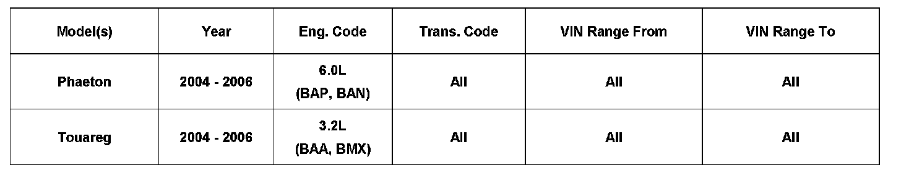
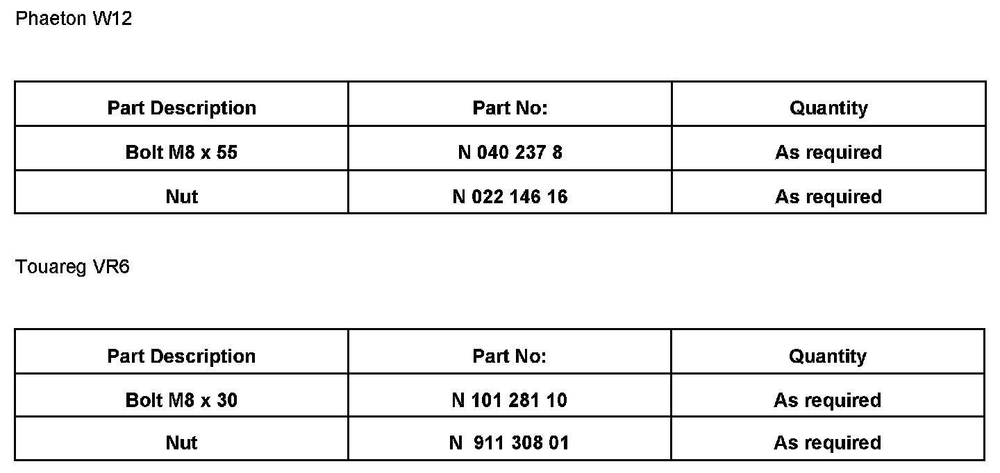

Exhaust System - Catalytic Converter Studs Broken
26 08 01April 9, 2008
2017656

Affected Vehicles
Condition
Catalytic Converter Studs, Broken
Technical Background
N/A.
Production Solution
No production change required.
Service
Note:
DO NOT replace catalyst(s) for this condition. Catalyst(s) replaced for this condition may be debited.
^ Drill out the broken studs to a 9 mm diameter and install bolts and nuts through the hole in place of studs.
^ Tighten new fasteners to 25 Nm (19 ft. lbs.).
Warranty
Information only.

Required Parts and Tools
Additional Information
All part and service references provided in this Technical Bulletin are subject to change and/or removal. Always check with your Parts Dept. and Repair Manuals for the latest information.